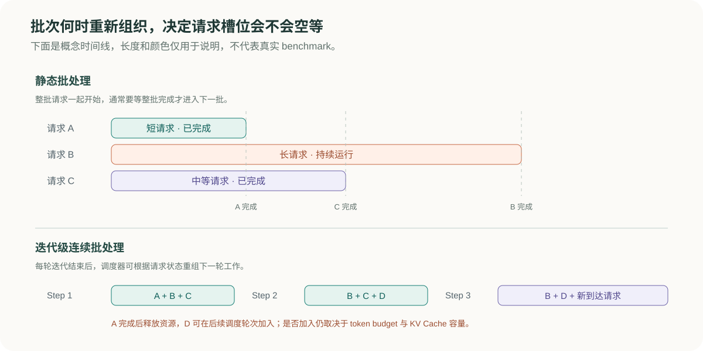

第 05 章 · 调度、批处理与运行时
Continuous Batching：每轮迭代重新组织请求
多个用户同时请求模型时，生成长度却各不相同。Continuous Batching 的关键不是让所有请求永远待在同一个 batch，而是在每轮模型迭代后，根据请求状态动态调整下一轮要执行的集合。
想象三位用户同时发来请求：A 只需要一句简短回答，B 要生成一篇长文，C 需要翻译一段文字。如果系统把 A、B、C 固定成一个批次，并且必须等 B 结束才能开始下一批，那么 A 和 C 完成后留下的执行位置就会空着。Continuous Batching 要解决的就是这个“请求完成时间不一致”的问题。
读完这一章，你应该能够
- 解释固定批次生成为什么容易出现长短请求相互等待。
- 用迭代时间线说明请求何时退出、等待请求何时加入。
- 理解当前 V1 Scheduler 如何用 token budget 安排运行中和等待中的请求。
- 解释 KV Cache 容量不足时的抢占、重算代价，以及吞吐和延迟之间的取舍。

5.1 固定批次的问题：请求长度不一致
在一个简化的固定批次模型里，A、B、C 同时开始生成。A 很快生成完，C 随后结束，但 B 还需要很多轮 Decode。若执行框架只能在整个批次结束后重新装入下一批请求，那么 A、C 的位置就不能及时交给新请求 D。
问题不在于 GPU 一定停止工作，而在于批次的生命周期被最长请求牵制：已经完成的请求不能及时腾出批次槽位，等待队列也无法利用这些空出来的位置。
| 请求 | Prompt | 输出长度（教学假设） | 结果 |
|---|---|---|---|
| A：简短问答 | 短 | 2 tokens | 很早结束 |
| B：长文生成 | 中等 | 8 tokens | 仍在生成 |
| C：短翻译 | 中等 | 4 tokens | 先于 B 结束 |
| D：新请求 | 短 | 未知 | 在等待队列中 |
表中的 token 数仅用于构造小例子，不能用于推断真实请求耗时或 GPU 利用率。
5.2 迭代级连续批处理：每轮结束后重新看一遍队列
自回归生成会反复执行模型迭代。Continuous Batching 把这个迭代边界作为重新组织请求的机会：已经完成的请求退出，等待中的请求有机会进入，尚未完成的请求继续执行。这种迭代级（iteration-level）调度最早由 Orca 系统提出，用于替代“以整个批次为完成边界”的静态批处理。
- 本轮迭代开始前，调度器查看当前运行请求和等待请求。
- 为可以执行的请求分配本轮需要处理的 token 和 KV Cache 槽位。
- GPU 执行本轮模型计算，产生新的 token 或完成状态。
- 下一轮调度时，完成的请求被移出运行集合，等待请求可以补入。
因此，“连续”指的是请求集合可以随着迭代持续变化，而不是一次性固定成一个静态 batch。它也不意味着 GPU 永远不会空闲：如果没有请求、资源不足或某些请求暂时无法被调度，GPU 仍可能没有可执行工作。
5.3 用一个小时间线看请求如何进出
继续使用 A、B、C、D 的例子。为了突出批次变化，我们暂时假设 A 需要 2 轮、C 需要 4 轮、B 需要 8 轮 Decode；真实系统还会包含 Prefill、不同长度的 token chunk 和模型计算时间。
交互观察：下一轮的运行集合
运行集合：A + B + C。三个请求都已进入执行，D 还在等待队列中。
A、B、C 会根据当前状态获得本轮计算资源；它们的 Prompt 长度和输出进度不必相同。
运行集合：B + C + D。A 已经完成并退出，D 在后续调度轮次被接纳。
B 和 C 不需要等 D 的 Prompt 处理完才“重新开始”；调度器会在 token budget 内安排本轮可执行工作。
运行集合：B + D + 新到达请求。C 完成后也可以退出，后续请求继续获得调度机会。
是否能接纳新请求，还取决于 token budget、活动序列上限和可用 KV Cache blocks。
5.4 V1 Scheduler 如何决定本轮做什么？
只说“每轮把 Prefill 和 Decode 混起来”还不够准确。当前 vLLM V1 Scheduler 的核心思路更统一：它跟踪每个请求已经计算到多少 token，以及当前请求总共需要处理多少 token，然后在每个调度步骤中给请求分配一段 token 工作。
官方架构说明特别指出：V1 Scheduler 内部没有独立的“Prefill 阶段”和“Decode 阶段”两个调度循环。请求记录自己的已计算 token 数；调度器在每一步分配 token，让已计算进度逐渐追上请求当前需要处理的 token 数。这种方式可以覆盖普通 Decode、Chunked Prefill、Prefix Cache 命中和 Speculative Decoding 等场景。
# 概念伪代码：帮助理解调度目标，不是 vLLM 的可执行源码
for each engine_step:
token_budget = configured_budget
for request in running_requests:
n = choose_tokens_to_process(request, token_budget)
schedule(request, n)
token_budget -= n
for request in waiting_requests:
if can_admit(request, token_budget, kv_cache):
n = choose_prefill_chunk(request, token_budget)
schedule(request, n)
token_budget -= n
execute_scheduled_tokens_on_gpu()
update_request_states()上面的伪代码只表达调度意图。实际实现还要处理优先级、请求状态、KV Cache 分配、编码器预算、投机 token、异步执行和多种并行模式。对配置参数的准确解释，应以所用版本的 vllm serve --help 和 Scheduler 文档为准。
| 资源约束 | 它限制什么 | 调大时可能带来的代价 |
|---|---|---|
max_num_batched_tokens | 一轮可处理的 token 工作预算 | 单轮工作更大，可能改变延迟和 Prefill / Decode 之间的竞争 |
max_num_seqs | 可同时处理的序列数量上限 | 更多并发请求可能占用更多 KV Cache |
| KV Cache blocks | 请求能否继续保存其注意力状态 | 缓存耗尽时可能触发排队、拒绝或抢占路径 |
5.5 KV Cache 不够时会怎样？
Continuous Batching 不是只把请求塞进一个越来越大的 batch。每个运行请求都需要 KV Cache 保存上下文；如果缓存块不足，调度器可能无法为新的 token 工作分配空间。
当前 V1 的一种处理方式是抢占（preemption）：按调度策略选择一个正在运行的请求，释放它持有的 KV Cache blocks，并把它放回等待队列。该请求再次被接纳时，通常需要重新计算之前的进度，而不是默认把完整 KV Cache 换出到 CPU 后原样恢复。
抢占不是免费的。它可以帮助系统在有限显存下继续调度，但被抢占请求可能需要重算，增加端到端延迟。因此，频繁抢占往往意味着并发、上下文长度、KV Cache 容量或 token budget 的组合需要重新评估。
排查时不要只看 GPU 利用率。还应同时观察 KV Cache 使用情况、抢占计数、请求队列长度、TTFT、ITL 和输出吞吐，才能判断瓶颈是计算、缓存容量还是调度竞争。
5.6 吞吐、延迟与公平性：没有一个参数能同时最大化所有指标
更积极地接纳请求，可能提高单位时间处理的 token 数；但更大的运行集合会消耗更多 KV Cache，也可能让新请求等待更久。较大的 Prefill chunk 可以更快处理长 Prompt，却可能挤占 Decode 请求本轮的 token budget；较小的 chunk 能更频繁地给 Decode 留出机会，却可能增加长 Prompt 完成 Prefill 所需的迭代数。
所以调参时应先明确服务目标：
- 交互式问答：通常更关注 TTFT、ITL 和 P95 / P99 尾延迟。
- 离线批处理：通常更关注总吞吐、任务完成时间和资源成本。
- 多租户服务：还要关注队列公平性、优先级、最大排队请求数和拒绝策略。
不要直接复制网上的 max_num_seqs=256、gpu_memory_utilization=0.95 或某个固定“最佳 GPU 利用率”。合理参数取决于模型、GPU、上下文长度分布、并发、输出长度和服务目标。应该用代表真实流量的 workload 做基准测试，再逐步调整。
本章自检
- 为什么一个短请求完成后，迭代级连续批处理可以让等待请求在后续步骤进入？
- 为什么不能把 V1 Scheduler 简单理解成两个完全分离的 Prefill / Decode 调度阶段？
- 当 KV Cache 不足时，为什么抢占后重新计算会增加延迟？
- 为什么提高最大并发数不一定提高真实业务的 Goodput？
下一章将把这些机制落到实际环境：检查硬件和 Python 条件，安装与验证 vLLM，运行一个离线推理示例，再启动 OpenAI 兼容服务。
参考资料
- Yu et al., Orca: A Distributed Serving System for Transformer-Based Generative Models，OSDI 2022。提出迭代级调度（也称 Continuous Batching）的原始系统论文。
- Kwon et al., Efficient Memory Management for Large Language Model Serving with PagedAttention，SOSP 2023。vLLM 将连续批处理与分页 KV Cache 结合的实现背景。
- vLLM, Architecture Overview — Scheduler。说明 V1 的 token-budget scheduling、FCFS / Priority 和 preemption。
- vLLM, Scheduler Configuration Reference。查询批处理 token 预算、序列上限和队列相关配置。
- vLLM, Optimization and Tuning。说明 KV Cache 不足时的抢占和重算影响。
- 源码：V1 Scheduler，可查看当前调度循环与 preemption 实现。
请求长度和 Step 时间线均为教学构造，不是性能测试结果。